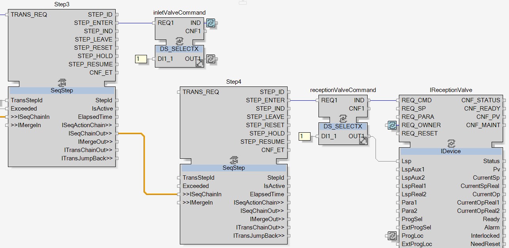
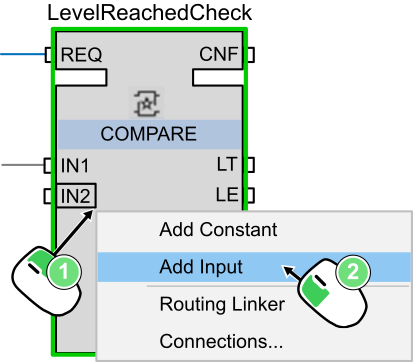
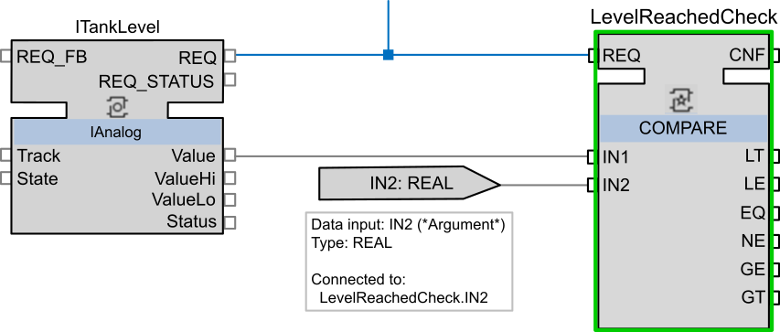
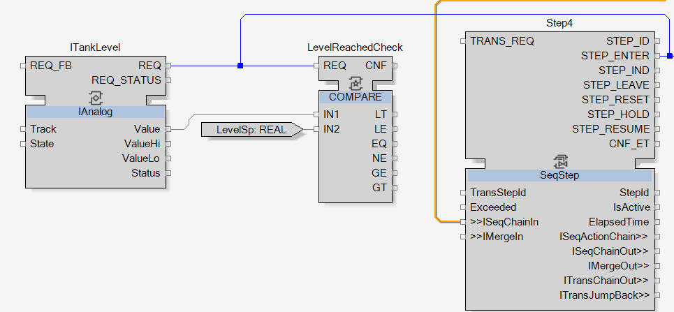
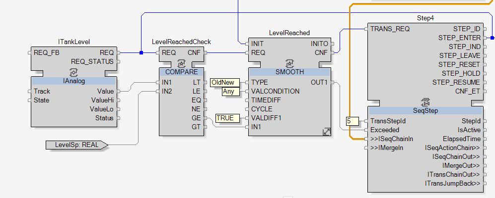

To start the development, add a new SeqStep function block, name it Step4 and link Step3.ISeqChainOut to Step4.ISeqChainIn.
|
NOTE:
As defined in the topic Filling Sequence Definition, this step opens the reception valve. Once the reception valve is opened then the flow of raw milk will enter the piping and start filling up the tank. |
To open the reception valve, a DS_SELECTX function block, named receptionValveCommand, will send the open command, here the constant 1, to the reception valve adapter.

| The command for opening the reception valve is done. So at this point, the two valves are opened and the raw milk is filling up the tank. To complete this fourth step, the transition condition has to be developed. |
As defined in the topic Filling Sequence Definition, the transition condition of this fourth step is: the level of whole milk in the tank reaches an expected value.
The level of whole milk in the tank will be transmitted through the ITankLevel adapter. This level need to be compared to the expected value, using a COMPARE function block:
Add a COMPARE function block and name it LevelReachedCheck.
Change its input variable type from ANY to REAL.
Link ITankLevel.REQ to LevelReachedCheck.REQ and ITankLevel.Value to LevelReachedCheck.IN1. It will transmit and update continuously the tank level for comparison.
Link Step4.STEP_ENTER to LevelReachedCheck.REQ to force an update of the input of LevelReachedCheck when the step is entered.
Add an input to IN2. This input will bring the expected level value to LevelReachedCheck.
|
 |
|
NOTE:
With this way of adding an input, instead of adding it through the Interface editor, the type of the input will be automatically set. It takes the type of the input variable that has been added to, here REAL. |
Click anywhere to position the input into the network. This new input is directly connected to LevelReachedCheck.IN2.

Once added, name it LevelSp.
The With Type Editor dialog box opens to connect it to an event. Connect it with INIT.

| At this point, LevelReachedCheck is correctly set up and will then compare the level value with LevelSp input value. |
As defined in the topic Filling Sequence Definition, the sequence moves to the next step when the expected level of whole milk is reached in the tank. That means when the level is greater than or equal to LevelSp.
Add a SMOOTH function block and name it LevelReached to check when LevelReachedCheck.GE turns TRUE.
Set LevelReached as the previous SMOOTH function blocks.
Link inletValveOpenCheck.INITO to LevelReached.INIT to continue the series of initialization.
Link LevelReached to Step4 and add the constant 5 to Step4.TransStepId.

|
The development of the fourth step is now completed.
Cross reference the links between receptionValveCommand and IReceptionValve, between inletValveOpenCheck and LevelReached and then move to the next step. |